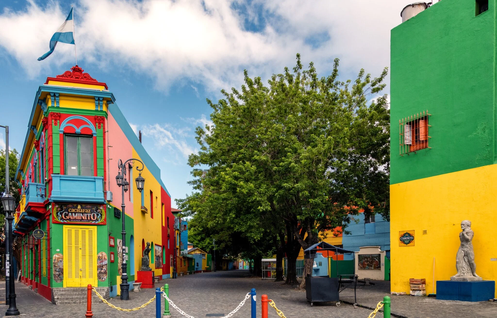
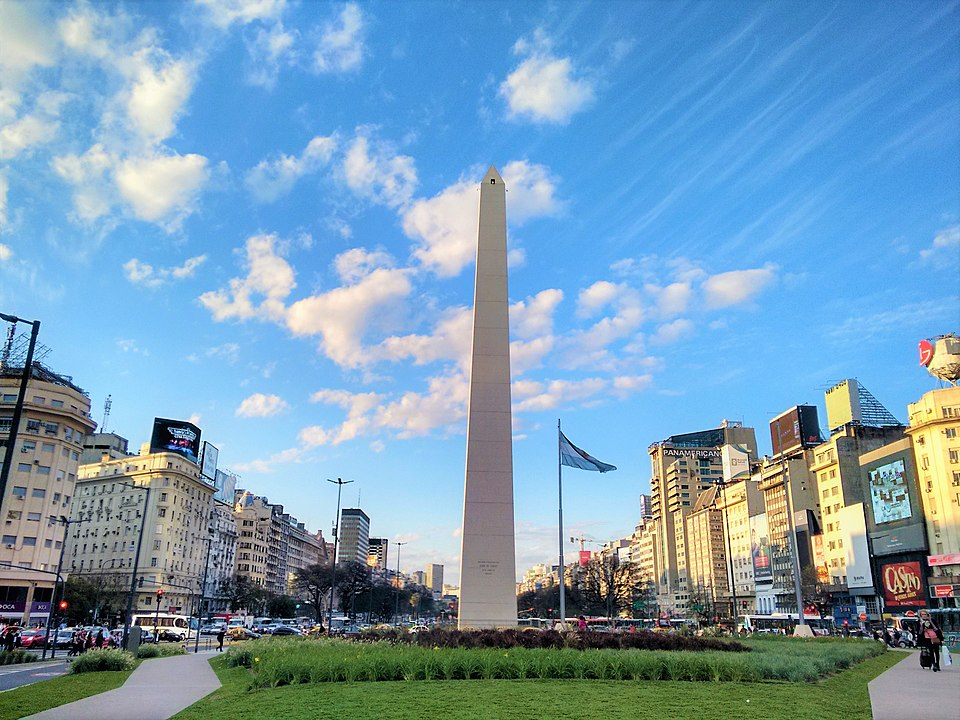
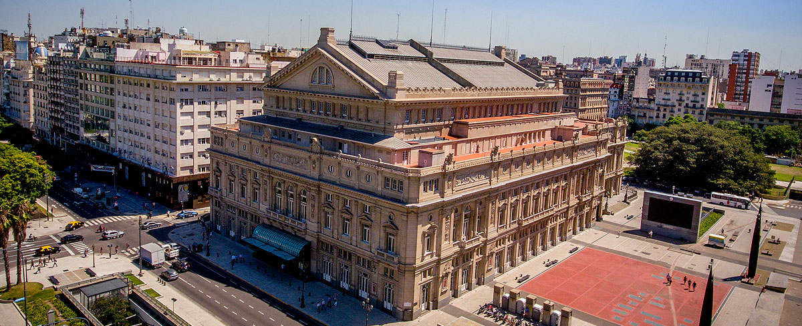
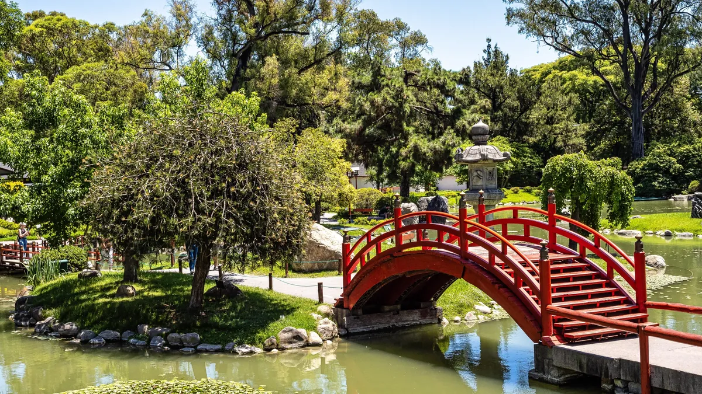
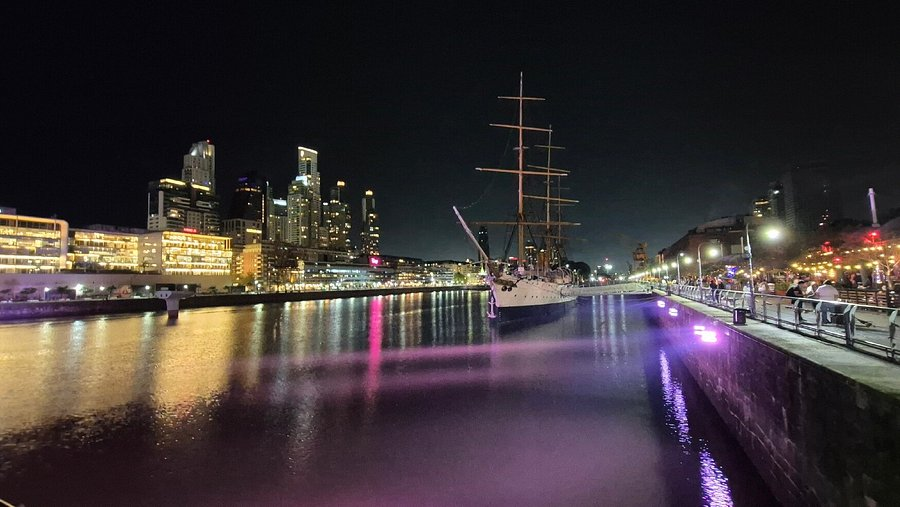
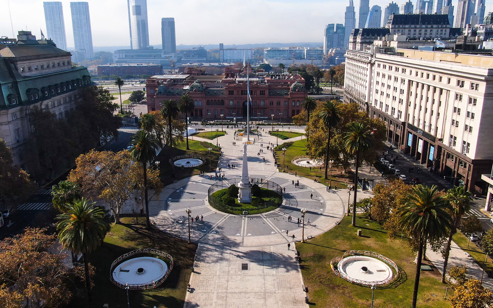

Fig 1. Caminito is a famous street located in the La Boca neighborhood, known for its
colorful buildings and tango dancers.

Fig 2. The Obelisk is one of Buenos Aires' most iconic landmarks, located at the
intersection of 9 de Julio Avenue and Corrientes Avenue.

Fig 3. Teatro Colón is one of the world's most famous opera houses, located in the heart of
Buenos Aires.

Fig 4. The Japanese Garden in Buenos Aires is a serene and beautiful space showcasing
Japanese culture and horticulture.

Fig 5. Puerto Madero is a trendy waterfront district in Buenos Aires, known for its upscale
restaurants and stunning views.

Fig 6. Plaza de Mayo is one of the most historic and important squares in Buenos Aires,
surrounded by landmarks like Casa Rosada.